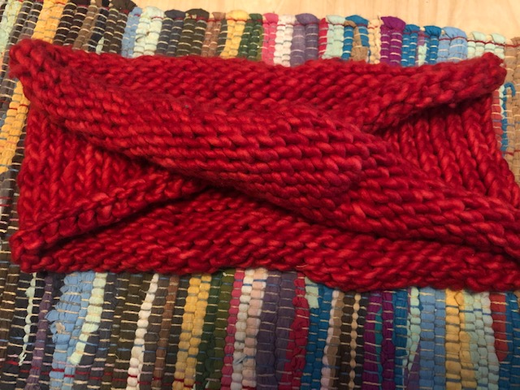

Hi! My name is Iris Ayala, and I am interested in learning more about fabrication and how to use the machines and tools I encounter on a daily basis in the Fabrication Lab at the Grad School of Design. In my spare time, I enjoy crafting. I've taught myself how to knit, crochet, sew, and embrodier. I would like to explore fabrication in relation to textiles like sewing and knitting although I'm not sure exactly what I want to pursue.
And here is a link.
Hello, PHYS_S-12!